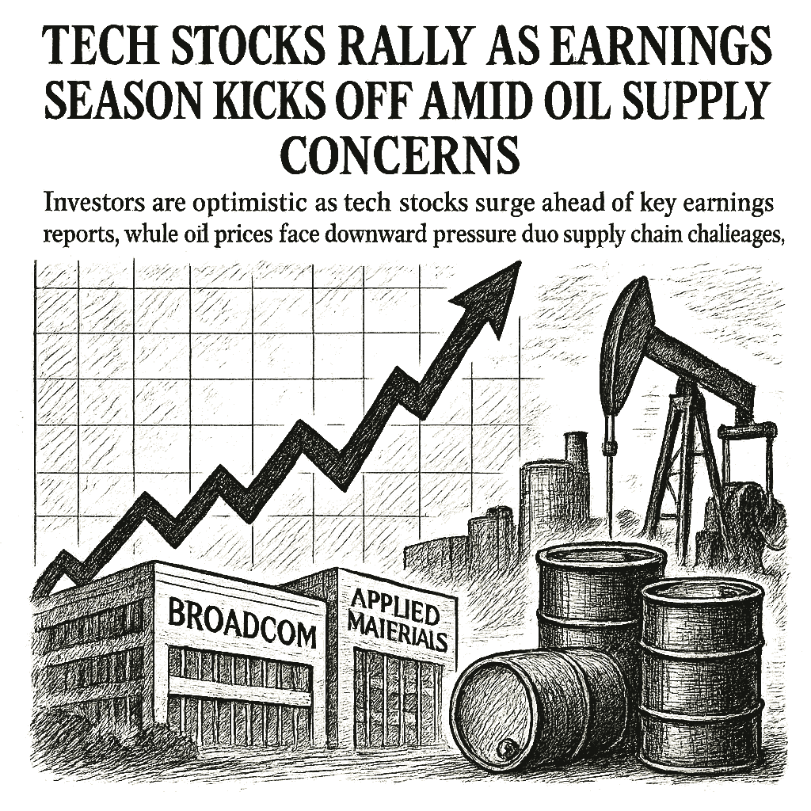

SPY
Current: $772.41Change: +6.80 (+0.89%)
Updated:
Source: yahoo_chartFreshness: fresh


Investors are optimistic as tech stocks surge ahead of key earnings reports, while oil prices face downward pressure due to supply chain challenges.

Today's Headline: Tech Stocks Rally as Earnings Season Kicks Off Amid Oil Supply Concerns
Setup: Investors are optimistic as tech stocks surge ahead of key earnings reports, while oil prices face downward pressure due to supply chain challenges.
Primary Topic: Tech Stocks and Earnings Season
Specific Development: Tech stocks, particularly QQQ and SPY, are experiencing significant gains as earnings reports approach, with Broadcom and Applied Materials set to report today.
Why Today Is Different: This marks the beginning of a crucial earnings season that could shape market sentiment, especially in the tech sector, amid ongoing concerns about oil supply.
Secondary Topics: Oil Prices; Market Volatility
Tone: Optimistic
Sectors: Technology; Energy
Companies: Broadcom; Applied Materials
Commodities: Oil
Countries Or Regions: United States
Macro Themes: Earnings Season; Supply Chain Issues
Why This Story: The performance of tech stocks during this earnings season could significantly impact overall market trends, especially given the backdrop of fluctuating oil prices.
Why This Matters: Broadcom and Applied Materials Earnings Put Broadening Chip Rally to the Test is the clearest current evidence-led frame for Joshua's observation-only review; missing facts remain explicit intelligence gaps.

Summary: Global markets reacted positively overnight, with tech stocks leading gains as investors anticipate earnings reports.
Details: U.S. futures are up, particularly in the tech sector, while oil prices are under pressure due to supply chain concerns.
Why This Matters: The performance of global markets, especially in tech, can influence U.S. market sentiment and investment strategies.

No high-priority earnings expectation block is supported by the current canonical snapshot.

- WOPR learning pipeline: Collecting samples
- Candidates evaluated 24h: 0
- Current gate: Evidence
- Notification ledger events in 24h: 5
- Pending orders created/canceled/filled/expired: 1/0/0/0
- Pending lifecycle interpretation: Pending-order cancellations have trackable reasons and no obvious rapid churn pattern.
- Portfolio risk: Label: High / Score: 94.0
- Latest intelligence gap report: intelligence_gap_report_2026-10-04.pdf
Why This Matters: The active gate is Evidence, so the key question is why candidates are stopping before approval, not how to force trades.

- Sentinel role: infrastructure and operational status only.
- State: ONLINE
- Last successful validation: 2026-10-05T14:15:40.295436+00:00
- Payloads accepted/rejected: 24089/0
- Node health score: 100
Why This Matters: Sentinel is ONLINE, so Joshua should use its context only to the extent the latest accepted pulse is fresh and authenticated.

CANDIDATES MOVING THROUGH JOSHUA'S INVESTMENT-REVIEW WORKFLOW
FROZEN DAILY BRIEF SNAPSHOT | 2026-10-05T14:15:50.332661+00:00
QUEUE SUMMARY | Investment Ready: 0 | Waiting for Price: 0 | Waiting for Evidence: 1 | Research Underway: 1 | Governance Hold: 5 | Monitor Only: 0
Investment-ready status: No candidates are currently Investment Ready.
#6 QBTS - Governance Hold [Moved Down 5->6]
Joshua's Thesis: Positive thesis not yet established.
Why Waiting: Governance gate has not cleared.
Price: 15.54 now; 17.52 preferred entry
What Unlocks It: Governance gate clears; Clear valuation support; Evidence that the business quality matches the risk being taken
Portfolio Fit: 0.0/100 — VERY LOW
Portfolio Fit Drivers: projected Unclassified exposure 82.9%; projected Unclassified exposure 82.9%; candidate amount $100 vs $51 currently allocated
Candidate Risk: 100.0/100 — VERY HIGH
Risk Drivers: projected Unclassified exposure 82.9%; projected Unclassified exposure 82.9%; candidate amount $100 vs $51 currently allocated
Next: Re-evaluate after the recorded gate clears. Owner: Joshua.
#13 PLTR - Governance Hold
Joshua's Thesis: Positive thesis not yet established.
Why Waiting: Governance gate has not cleared.
Price: 188.96 now; 184.54 preferred entry
What Unlocks It: Governance gate clears; Clear valuation support; Evidence that the business quality matches the risk being taken
Portfolio Fit: 0.0/100 — VERY LOW
Portfolio Fit Drivers: projected Technology exposure 83.4%; projected AI software exposure 66.3%; candidate amount $100 vs $51 currently allocated
Candidate Risk: 100.0/100 — VERY HIGH
Risk Drivers: projected Technology exposure 83.4%; projected AI software exposure 66.3%; candidate amount $100 vs $51 currently allocated
Next: Re-evaluate after the recorded gate clears. Owner: Columbo.
#15 SPCX - Governance Hold [Moved Up 18->15]
Joshua's Thesis: Positive thesis not yet established.
Why Waiting: Governance gate has not cleared.
Price: 164.77 now; 153.06 preferred entry
What Unlocks It: Governance gate clears; Clear valuation support; Evidence that the business quality matches the risk being taken
Portfolio Fit: 0.0/100 — VERY LOW
Portfolio Fit Drivers: projected Unclassified exposure 82.9%; projected Unclassified exposure 82.9%; candidate amount $100 vs $51 currently allocated
Candidate Risk: 100.0/100 — VERY HIGH
Risk Drivers: projected Unclassified exposure 82.9%; projected Unclassified exposure 82.9%; candidate amount $100 vs $51 currently allocated
Next: Re-evaluate after the recorded gate clears. Owner: Advisory Committee.
#18 IONQ - Waiting for Evidence [Moved Down 14->18]
Joshua's Thesis: Positive thesis not yet established.
Why Waiting: Positioning gate failed.
Price: 43.19 now; 41.85 preferred entry
What Unlocks It: Clear valuation support; Evidence that the business quality matches the risk being taken; Independent evidence streams pointing the same way
Portfolio Fit: 0.0/100 — VERY LOW
Portfolio Fit Drivers: projected Unclassified exposure 82.9%; projected Unclassified exposure 82.9%; candidate amount $100 vs $51 currently allocated
Candidate Risk: 100.0/100 — VERY HIGH
Risk Drivers: projected Unclassified exposure 82.9%; projected Unclassified exposure 82.9%; candidate amount $100 vs $51 currently allocated
Next: Positioning status must no longer be warning. Owner: Joshua.
#21 RCL - Governance Hold [Moved Down 20->21]
Joshua's Thesis: Positive thesis not yet established.
Why Waiting: Governance gate has not cleared.
Price: 274.52 now; 282.98 preferred entry
What Unlocks It: Governance gate clears; Clear valuation support; Evidence that the business quality matches the risk being taken
Portfolio Fit: 0.0/100 — VERY LOW
Portfolio Fit Drivers: projected Unclassified exposure 82.9%; projected Unclassified exposure 82.9%; candidate amount $100 vs $51 currently allocated
Candidate Risk: 100.0/100 — VERY HIGH
Risk Drivers: projected Unclassified exposure 82.9%; projected Unclassified exposure 82.9%; candidate amount $100 vs $51 currently allocated
Next: Re-evaluate after the recorded gate clears. Owner: Columbo.
#24 ANGX - Governance Hold [Moved Down 23->24]
Joshua's Thesis: Positive thesis not yet established.
Why Waiting: Governance gate has not cleared.
Price: 4.12 now; 4.32 preferred entry
What Unlocks It: Governance gate clears; Clear valuation support; Evidence that the business quality matches the risk being taken
Portfolio Fit: 0.0/100 — VERY LOW
Portfolio Fit Drivers: projected Unclassified exposure 82.9%; projected Unclassified exposure 82.9%; candidate amount $100 vs $51 currently allocated
Candidate Risk: 100.0/100 — VERY HIGH
Risk Drivers: projected Unclassified exposure 82.9%; projected Unclassified exposure 82.9%; candidate amount $100 vs $51 currently allocated
Next: Re-evaluate after the recorded gate clears. Owner: Advisory Committee.
#25 DIA - Research Underway
Joshua's Thesis: Positive thesis not yet established.
Why Waiting: Research evidence is still being gathered.
Price: Current price unavailable.; Preferred entry not established.
What Unlocks It: Clear valuation support; Evidence that the business quality matches the risk being taken; Independent evidence streams pointing the same way
Portfolio Fit: 0.0/100 — VERY LOW
Portfolio Fit Drivers: projected ETF exposure 66.3%; projected Broad market exposure 66.3%; candidate amount $100 vs $51 currently allocated
Candidate Risk: 96.5/100 — VERY HIGH ↓
Risk Drivers: projected ETF exposure 66.3%; projected Broad market exposure 66.3%; candidate amount $100 vs $51 currently allocated
Next: Clear valuation support; Evidence that the business quality matches the risk being taken; Independent evidence streams pointing the same way. Owner: Columbo.
Observation only. This section creates no recommendation, order, authority, or execution instruction.

- Which recorded governance requirement must clear before QBTS can advance?
- Which recorded governance requirement must clear before PLTR can advance?
- Which recorded governance requirement must clear before SPCX can advance?
- If IONQ reaches the recorded price condition <= 41.85, which recorded evidence and governance requirements would still remain?

The current rally in tech stocks is encouraging, especially as earnings reports loom. However, the decline in oil prices raises questions about economic health and could introduce volatility. Monitoring these developments will be crucial for investment strategies.

Compared to: 2026-10-02
- Market weather: Still Elevated
- Top opportunity: Still FDX
- Joshua gate: Still Evidence
- 2Y Treasury.last_price: 4.83 -> 4.83 (unchanged); 2Y Treasury.last_price changed 0.00% versus the prior frozen Chronicle snapshot.
- 2Y Treasury.percent_change: 1.0460251046025069 -> 1.0460251046025069 (unchanged); 2Y Treasury.percent_change changed 0.00% versus the prior frozen Chronicle snapshot.
- 10Y Treasury.last_price: 5.28 -> 5.28 (unchanged); 10Y Treasury.last_price changed 0.00% versus the prior frozen Chronicle snapshot.
- 10Y Treasury.percent_change: 0.7633587786259549 -> 0.7633587786259549 (unchanged); 10Y Treasury.percent_change changed 0.00% versus the prior frozen Chronicle snapshot.
- 30Y Treasury.last_price: 5.63 -> 5.63 (unchanged); 30Y Treasury.last_price changed 0.00% versus the prior frozen Chronicle snapshot.
- 30Y Treasury.percent_change: 0.35650623885917243 -> 0.35650623885917243 (unchanged); 30Y Treasury.percent_change changed 0.00% versus the prior frozen Chronicle snapshot.
- SPY.last_price: 769.64 -> 772.415 (up); SPY.last_price changed 0.36% versus the prior frozen Chronicle snapshot.
- SPY.percent_change: -0.22168924612692506 -> 0.8888337404161322 (up); SPY.percent_change changed 500.94% versus the prior frozen Chronicle snapshot.
- QQQ.last_price: 749.58 -> 752.81 (up); QQQ.last_price changed 0.43% versus the prior frozen Chronicle snapshot.
- QQQ.percent_change: 0.6823371390194817 -> 2.210364818812536 (up); QQQ.percent_change changed 223.94% versus the prior frozen Chronicle snapshot.
- IWM.last_price: 281.52 -> 282.49 (up); IWM.last_price changed 0.34% versus the prior frozen Chronicle snapshot.
- IWM.percent_change: -0.15959144589851595 -> 0.8820798514391928 (up); IWM.percent_change changed 652.71% versus the prior frozen Chronicle snapshot.

The positive momentum in tech stocks ahead of earnings reports suggests a shift in investor sentiment, contrasting with previous cautiousness.
No new warnings; however, continued monitoring of oil prices and their impact on market sentiment is advised.
Portfolio Construction Review
Current allocation: 50.82 allocated.
Largest sector: Technology at 50.8%.
Largest theme: AI infrastructure at 50.8%.
Diversification: Mixed (49.2).
Cash allocation: 94.9% unallocated.
Recommended exposure: FDX at portfolio-fit score 0.0.
Portfolio fit: FDX has a mixed portfolio fit; the diversification improvement is not decisive yet.
Why This Matters: Portfolio Manager evaluates whether an opportunity improves this portfolio; it does not select the investment, vote, or authorize execution.

Focus on the implications of earnings reports and oil supply dynamics for market positioning today.

| Can trigger trade | no |
| Can modify trade rules | no |
| Can add watch items | yes |
| Can add review questions | yes |
| Can adjust confidence notes | yes |
| Input policy | external_intelligence_plus_sanitized_internal_observations |
| External policy | The Editor-in-Chief synthesizes current world/market context where available and labels unknowns; provider/model provenance remains separate. |
| Internal policy | Joshua/WOPR/Sentinel facts are supplied as sanitized observation-only summaries. |
| Editorial model | gpt-4o-mini |
- Selected by a deterministic daily rotation through symbols already present in the persisted Chronicle snapshot.
- Related event on the canonical wire: Investors Had a Tepid Reaction to Micron's Latest Earnings Report. An Overlooked Headwind May Explain Why.
- U.S. urges Europe to ‘immediately’ release diesel reserves as Iran war fuels record prices
- Desk: geopolitical; source: CNBC; linked symbols: none recorded.
- Published: 10/2/26 00:51 MST.
- High-impact watch: FOMC Minutes Meeting of September 15-16 - 10/7/26 11:00 MST.
- Affected assets: US equities, Treasuries, USD; source: federal_reserve_calendar.
- Technology: 3.14% session performance; source: persisted sector ledger.
- Utilities: 1.89% session performance; source: persisted sector ledger.
- Energy: 1.19% session performance; source: persisted sector ledger.
- RUSSELL FUTURES: 1.19% recorded move; price: 2851.0.
- Session: open; catalyst status: possible; source: yahoo_chart.
- Broadcom and Applied Materials earnings reports; why it matters: These reports could significantly influence tech stock valuations and market sentiment.
- State: weakening; score: 32.00/100; advance/decline ratio: 1.43.
- Above 50-day average: 19.30%; sample: 119; provider: sentinel_sampled_breadth.
- Decision outcomes evaluated: 16; currently untestable: 0.
- Warning review: unknown 2; confidence calibration: insufficient_sample.
- Current macro regime: defensive_rotation; change probability: unavailable.
- Risk dashboard: cautious (62/100); breadth: weakening; sentiment: neutral.
- Scenario board only - a current-state observation, not a forecast or execution instruction.
- Created CAN SLIM and founded Investor's Business Daily, combining fundamental growth research with price-and-volume analysis.
- Published quotation: "The whole secret to winning in the stock market is to lose the least amount possible when you're not right."
- Published framework: Seek leading companies with strong current and annual growth, novel products or conditions, institutional accumulation, and favorable price-volume action; enter from sound bases and cut losses quickly.
- Committee lens: O'Neil adds institutional accumulation, market regime, and price-volume confirmation to Joshua's evidence set while demanding explicit invalidation when a breakout fails.
- Public philosophy profile only; no participation, endorsement, or current recommendation is implied.
- How will the earnings reports from Broadcom and Applied Materials influence tech stock valuations?
- FDX: No canonical symbol-specific material event is linked.
- FDX: Relevant earnings-calendar confirmation is unavailable.
- Attach the missing FDX evidence before the next committee review.
- Define evidence that would confirm or retire each unresolved warning before the next review window.
- Which recorded governance requirement must clear before QBTS can advance?
- Which recorded governance requirement must clear before PLTR can advance?
- Which recorded governance requirement must clear before SPCX can advance?
- If IONQ reaches the recorded price condition <= 41.85, which recorded evidence and governance requirements would still remain?
- Evidence agenda: FDX - No canonical symbol-specific material event is linked.
- Proposed review: Oil price movements; why it matters: Falling oil prices could indicate economic weakness, affecting market sentiment.
- Canonical instruments reviewed: 24; delayed 3, fresh 18, stale 3.
- Leading sources: yahoo_chart (21), treasury_official_yield_curve (3).
- Snapshot recorded: 10/5/26 07:15 MST.
Tech Stocks Rally as Earnings Season Kicks Off Amid Oil Supply Concerns
Storm meter: Balanced
#6 QBTS - Governance Hold [Moved Down 5->6]
Observation mode: observation_only
Watch: Broadcom and Applied Materials earnings reports; why it matters: These reports could significantly influence tech stock valuations and market sentiment.
Question: Which recorded governance requirement must clear before QBTS can advance?